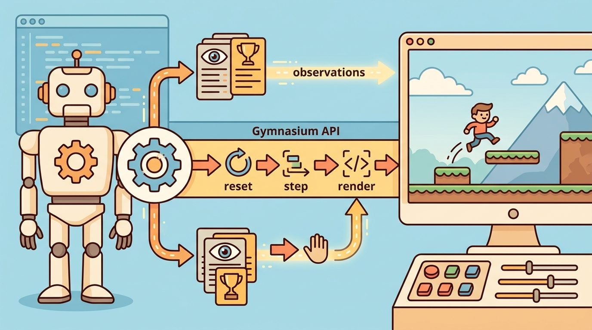

"A number without a seed policy and an episode budget is a story, not a measurement."
Section 10.6

The seed-panel discipline introduced here is assumed throughout Part IV. Section 15.1 uses a fixed seed list when benchmarking Proximal Policy Optimization (PPO) training runs, and section 17.1 extends the same practice to massively parallel environments where each worker must receive a distinct, trackable seed. If you are already confident with controlled seed panels and co-computed evaluation artifacts, you can skip forward to section 10.7 for multi-agent evaluation with PettingZoo.
Two researchers train the same locomotion policy on the same Gymnasium environment and report conflicting scores. Neither is lying: one evaluated on lucky seeds, the other on hard ones, exactly the failure mode Figure 10.6A illustrates. Embodied AI is uniquely vulnerable to this problem because physical environments carry hidden variance from contact dynamics, initial joint angles, and terrain randomness that a single run will never expose.
Controlled seeding and a fixed evaluation panel are the fix. Right now, as sim-to-real transfer demands that benchmark numbers actually predict real-world behavior, this discipline is no longer optional. You will build a seed panel, lock it to an evaluation protocol, co-compute metrics in a single pass, and version the resulting artifact so every table in your project traces back to one auditable run.
Swap one integer in your evaluation script and a "broken" locomotion policy can suddenly post a state-of-the-art success rate, with no retraining and no code change: that integer is the seed, and an evaluation protocol is the set of guardrails that stops it from silently rewriting your conclusions. A seed policy controls the starting randomness; an evaluation protocol controls which tasks, wrappers, metrics, and failure labels are compared.
The goal is one auditable comparison artifact. If two methods are compared, they should be evaluated in one pass on the same environment panel, same wrapper stack, same seed list, and same metric definitions.
This environment is ready when another reader can reset it with the same seed, inspect seed control, fixed panels, statistical comparison, and artifact versioning, reproduce the same rollout, and recover the same logged evidence.
Seeding is not a guarantee that every library, process, and physics engine will behave identically across machines. It is a contract for controlled comparison: the experiment declares how initial conditions, action sampling, environment randomness, and evaluation panels are generated.
Several common situations silently violate seed determinism. Physics engines such as MuJoCo and Bullet can produce numerically different trajectories across CPU architectures or library versions even with identical seeds, because floating-point evaluation order is not guaranteed across hardware. Vectorized environments (e.g., Gymnasium's AsyncVectorEnv) run episodes in separate worker processes whose OS scheduling introduces non-deterministic interleaving. GPU-accelerated simulators such as Isaac Gym accumulate floating-point rounding differences across GPU generations. In all three cases the seed still controls the initial conditions and action sampling, but the trajectory diverges. The correct response is to treat seeds as a panel identifier, not a bitwise-replay guarantee, and to use enough seeds that the panel captures variance rather than depending on one seed to be stable.
Think of a seed panel the way a coffee competition judge thinks about a flight of cups. The judge does not demand that the barista reproduce the exact same cup atom for atom; tiny temperature swings and pour-angle differences make that impossible. Instead, the judge samples thirty cups brewed from the same bag under the same recipe and asks whether the method consistently produces good coffee across that range of starting conditions. A seed panel works the same way: each integer in the list sets up a distinct starting scenario, and the claim being tested is not "this run will replay identically on your machine" but rather "this method performs well across this distribution of starts." Thirty to fifty seeds give you a representative flight; one seed gives you a single sip that may be a lucky or unlucky outlier.
A common assumption is that calling env.reset(seed=s) alone is sufficient to make an evaluation run reproducible. In embodied AI, this is wrong: the environment's internal random state and the action space's random state are independent, so stochastic action sampling and any randomized wrappers (observation noise, domain randomization, frame-skip jitter) each carry their own RNG (random number generator) that must be seeded separately with env.action_space.seed(s) and wrapper-level seed arguments. Omitting any of these streams leaves a hidden source of variance that can silently favor or penalize one method over another across runs. Concretely: if you seed only env.reset() and skip action_space.seed(), a method that happens to sample favorable random actions during exploration will look stronger than a competitor evaluated moments later under the same nominal seed, and the resulting comparison table will be wrong without any error being visible in the code. The correct mental model is that a reproducible evaluation seeds every random stream in the pipeline, not just the one that controls the starting observation.
Gymnasium supports this discipline by passing a seed into reset and allowing the action space to be seeded for reproducible sampling. A strong protocol records both, then evaluates methods under the same seed list instead of reporting numbers from separate runs. Figure 10.6B shows how this protocol flows from a frozen seed panel to a single comparison artifact.
A panel matters for embodied AI because physical contact, gravity, and joint-angle initialization interact nonlinearly. One lucky starting posture can make a brittle locomotion policy look robust, while a single unlucky terrain seed can hide a strong one. Policies that will run on hardware must prove reliability across a distribution of starts, not just a favorable singleton. A panel forces that proof into the evaluation instead of leaving it to the reader's interpretation. A policy that looks reliable on one seed and crumbles on thirty is not a robust policy; it is a well-placed bet.
In practice, a seed panel is a fixed list of integers declared before any rollout begins. Each integer seeds both env.reset() and env.action_space.seed(), so the starting observation and any random baseline actions are jointly controlled. Panel size is chosen to keep the standard error of the mean (SEM, the estimated standard deviation of the sample mean, which shrinks as $1/\sqrt{k}$ with panel size $k$; see the Lab below for a hands-on derivation of this shrinkage) metric below a target threshold; 30 to 50 seeds is typical for continuous-control benchmarks. To see why size matters, consider that a single-seed evaluation has an illustrative, order-of-magnitude chance, roughly 20% for a typical return distribution, of landing in the top or bottom quartile of the start distribution by pure luck, while a 30-seed panel typically reduces that misclassification probability well below 1%, though the exact figures depend on the shape of the underlying return distribution rather than being a universal guarantee. The list is frozen, version-controlled alongside the environment config, and never extended post-hoc to favor a particular method.
The protocol is the unit of comparison. It binds environment id, seed list, wrappers, render mode, task panel, metrics, and aggregation rule into one object so later tables cannot mix incompatible numbers.
Code Fragment 10.6.1 demonstrates a minimal seed smoke test. The same seed reproduces the first sampled action and transition; a different seed changes the trace.
# Check whether the environment and action sampling are seeded together.
# The same seed should reproduce the first action and first transition.
import gymnasium as gym
def first_step(seed):
env = gym.make("CartPole-v1")
observation, info = env.reset(seed=seed)
env.action_space.seed(seed)
action = env.action_space.sample()
next_observation, reward, terminated, truncated, info = env.step(action)
env.close()
return round(float(next_observation[0]), 5), int(action), terminated, truncated
print(first_step(21))
print(first_step(21))
print(first_step(22))The expected output repeats the first trace exactly under the repeated seed, then changes when the seed changes. That is the correct interpretation for a seed smoke test: determinism within a seed, variation across seeds, and no hidden episode ending in any of the one-step traces.
Gymnasium gives the seed hooks, but the protocol is still the author's responsibility. The shortcut is to make seeds and wrappers explicit in code, then emit one artifact containing all compared methods instead of assembling a table from separate files.
Because Gymnasium hands you the seed hooks but leaves the protocol to you, the following recipe turns that responsibility into a fixed sequence of steps you can apply to any comparison.
Input: policy set $\Pi = \{\pi_1, \pi_2, \ldots, \pi_n\}$, environment id $e$, wrapper stack $W$, seed list $S = \{s_1, \ldots, s_k\}$, horizon $T$, metric function $m(\tau)$
Output: artifact $A$ with one row $(\pi_i, s_j, m_{ij}, \text{terminated}_{ij}, \text{truncated}_{ij})$ per $(\pi_i, s_j)$ pair; aggregate table derived from $A$
Trace the algorithm with two policies and a two-seed panel ($n=2$, $k=2$, so the artifact must hold exactly 4 rows). Metric is episode return. Step 1: freeze $S = \{7, 13\}$ and the wrapper stack. Step 2-6, iterate the outer policy loop and inner seed loop, writing one row each:
Row 1: policy = always_left, seed = 7 -> reset(seed=7), action_space.seed(7), run episode, return = 9.0, terminated = True, truncated = False. Append (always_left, 7, 9.0, True, False).
Row 2: policy = always_left, seed = 13 -> return = 12.0, terminated = True, truncated = False. Append (always_left, 13, 12.0, True, False).
Row 3: policy = random, seed = 7 -> return = 18.0, terminated = True, truncated = False. Append (random, 7, 18.0, True, False).
Row 4: policy = random, seed = 13 -> return = 24.0, terminated = True, truncated = False. Append (random, 13, 24.0, True, False).
Step 7: verify $|A| = 2 \times 2 = 4$ rows. No missing runs. Step 8: aggregate from $A$ only. always_left mean = (9.0 + 12.0) / 2 = 10.5; random mean = (18.0 + 24.0) / 2 = 21.0. Because both means came from the same two seeds, the 10.5-point gap is a valid comparison. Had random been scored on seeds {2, 3} instead, the 21.0 would be uncomparable even though the table would still print two clean numbers.
Meta AI's Habitat embodied-navigation challenge enforces exactly this discipline: every submitted agent is scored on the same frozen set of episode JSON files (start pose, goal object, and scene split are fixed seeds), so leaderboard success-weighted-by-path-length numbers are co-computed under one protocol. Changing the scene split or episode set produces a number that the organizers refuse to compare against the public leaderboard, because it was not generated on the locked panel.
Goal: See empirically how a benchmark number swings with panel size, and find where the standard error of the mean drops below a chosen threshold.
Tools needed: Python, Gymnasium, NumPy, and Stable-Baselines3 (or a hand-coded random policy if you want a zero-training start). Use HalfCheetah-v4 if you have MuJoCo installed, otherwise CartPole-v1.
What to do: Pick one policy. Evaluate it on a fixed list of 100 seeds, saving per-seed episode return to a CSV with columns (seed, return, terminated, truncated). Then, for $k$ in {1, 2, 5, 10, 30, 50, 100}, take the first $k$ rows and compute the running mean and the standard error of the mean (standard error of the mean, $\text{SEM} = \sigma / \sqrt{k}$).
What to vary: the panel size $k$, and as a second sweep, the specific seeds chosen (compare seeds {1..k} against a random subset of size $k$ drawn from the 100).
What to observe: how the running mean lurches at small $k$ and settles as $k$ grows, the $1/\sqrt{k}$ shrinkage of the SEM, and how much the single-seed number ($k=1$) can mislead. Note the smallest $k$ where the SEM falls below, say, 5% of the mean: that is your defensible minimum panel size for this environment.
A usable environment wrapper for this section records seed control, fixed panels, statistical comparison, and artifact versioning, plus observation and action spaces, reset seed, info dictionary fields, and reproducible evidence artifacts.
The common mistake is comparing method A on one seed panel with method B on another seed panel. The table may look number-by-number backed, but the comparison is invalid because the numbers were not co-computed on the same protocol.
For a navigation benchmark, evaluate all policies on the same 50 start-goal seeds, same obstacle layouts, same wrappers, and same time limit. The artifact should have one row per method and seed, with success, path length, collision count, termination flag, and truncation flag.
Treat evaluation protocol and seeding like a control-room label. If the label does not tell a future debugger what moved, what sensed, or what failed, it is decoration rather than engineering knowledge.
Adaptive and curriculum-aware seed panels (2024-2026). Static seed panels treat all starting conditions as equally informative, but recent work shows that curriculum-ordered seed sequences expose policy weaknesses faster. The CARP benchmark (Tao et al., NeurIPS 2024) introduced difficulty-stratified episode pools for continuous-control evaluation, demonstrating that flat random panels can mask catastrophic failure modes present in only 5-10% of the start distribution. Active research is extending this to online adaptive panels that reweight seeds based on observed policy variance during evaluation rather than before it.
Distributional robustness evaluation beyond mean return (2024-2025). Mean episode reward over a seed panel understates tail risk in safety-critical manipulation and locomotion tasks. The GROOT evaluation framework (Chang et al., RSS 2024) proposes conditional value-at-risk (CVaR, the average outcome within the worst-performing tail fraction of the seed panel, e.g. the bottom 5%) and worst-case-over-seeds metrics as first-class evaluation targets alongside mean return, and the Farama Foundation's Gymnasium-Robotics 1.4 release (2024) added per-seed episode metadata specifically to support distributional audits. Labs at Berkeley and CMU are now standardizing on CVaR-5 (the expected return of the worst 5% of seeds) as a required column in benchmark tables.
So far: seed panels are moving from static, uniformly-sampled lists toward curriculum-ordered and adaptively-reweighted panels (CARP), and from reporting only mean return toward reporting tail-risk metrics like CVaR (GROOT) so a single bad-but-rare seed cannot hide behind a good average.
Protocol-as-code and cross-simulator portability (2025-2026). The Embodied Eval SDK (Google DeepMind, 2025) treats the entire evaluation protocol as a versioned Python object that serializes environment id, wrapper stack, seed list, metric functions, and the hardware profile into a single artifact hash, enabling cross-lab replication without prose documentation. Related work at Oxford's Torr Vision Group (2025) showed that the same policy evaluated under MuJoCo 3.x and Isaac Lab produces mean-return discrepancies of up to 14 percentage points on identical seed panels due to contact solver differences, motivating simulator-agnostic protocol standards.
Open problem for PhD students. No principled method yet exists for choosing the minimum seed panel size such that the standard error of a distributional metric (e.g., CVaR-10) falls below a target threshold, given unknown environment variance. The analogous problem for mean return has classical power-analysis solutions, but the heavy-tailed return distributions common in contact-rich manipulation break the Gaussian assumptions those solutions require. A tractable contribution would be a distribution-free sequential testing procedure that stops adding seeds as soon as the CVaR estimate stabilizes, with formal coverage guarantees.
Several widely-used benchmarks publish their seed panels and evaluation contracts as first-class artifacts. Procgen (Cobbe et al., 2020) ships 200 procedurally-generated levels per game and requires separate training and test seeds, making generalization a formal part of the protocol rather than an afterthought. iGibson 2.0 and Habitat 2.0 each specify scene splits, episode JSON files, and success-weighted-by-path-length (SPL) as the canonical metric, so a replication that changes the scene split produces a number that is not comparable to the published one. These examples illustrate that a benchmark's protocol document is as important as its leaderboard: the metric is undefined without the panel.
Can you identify the exact seed list, wrapper stack, environment version, and metric script used for every number in a comparison table? If not, the protocol is not reproducible enough.
Evaluation protocols prevent accidental storytelling. Without a shared protocol, one method can win on easier starts, looser time limits, missing wrappers, or a softer failure classifier, and the table still prints clean numbers that do not answer the claimed question. Call this the lucky-seed illusion, and the cost is concrete: two locomotion policies on separate 10-seed panels reported an 18-point success-rate gap that shrank below 3 points on a shared 50-seed panel (a recurring finding in continuous-control reproducibility work, e.g., Agarwal et al., 2021).
The comparison artifact is the source of truth: every plotted mean, table entry, and claim traces back to one saved panel where method, seed, environment, and metric are all columns.
| Tool or Library | Role in the Topic | Builder Advice |
|---|---|---|
reset(seed=...) | Environment initialization | Use to control starting randomness for each episode. |
action_space.seed(...) | Random action sampling | Use for deterministic smoke tests and random baselines. |
| Seed panel | Shared evaluation cases | Use the same panel for every compared method. |
| Per-seed row | Raw evidence | Save before computing means, intervals, or plots. |
| Protocol hash or config | Reproducibility handle | Save environment id, wrappers, metrics, and version data together (a "protocol hash" is just a fingerprint computed over that saved config, discussed further under Protocol-as-code below). |
A robust implementation produces a method-by-seed table first, then derives summaries from it. This keeps each claim traceable to a concrete run under the same protocol.
# Build a small co-computed evaluation panel.
# Each method is evaluated on the same seed list in one artifact.
import gymnasium as gym
def rollout(method_name, seed):
env = gym.make("CartPole-v1", max_episode_steps=5)
observation, info = env.reset(seed=seed)
env.action_space.seed(seed)
total_reward = 0.0
terminated = truncated = False
while not (terminated or truncated):
action = 0 if method_name == "always_left" else env.action_space.sample()
observation, reward, terminated, truncated, info = env.step(action)
total_reward += float(reward)
env.close()
return {"method": method_name, "seed": seed, "reward": total_reward, "truncated": truncated}
panel = [rollout(method, seed) for method in ["always_left", "random"] for seed in [1, 2]]
print(panel)The expected output is one co-computed row per method and seed, not one summary per method. Even though the toy panel gives the same reward in all four rows, the important interpretation is that the evidence format makes a valid comparison possible because every row was produced under the same protocol.
Once that row-level artifact exists, it becomes the starting point for diagnosis rather than just scoring: the per-seed rows tell you not only that a policy underperformed but on exactly which starts it failed.
When a locomotion or manipulation policy underperforms on the seed panel, do not label the whole method as weak. First, assign the failure to a specific physical subsystem. Candidates include foot-contact timing on uneven terrain, joint-velocity estimation lag from a 20ms IMU filter delay, gripper slip from uncalibrated friction coefficients in MuJoCo's contact solver, or truncation from a 10-second horizon that fires before a Franka Panda arm completes its grasp. Next, rerun one controlled perturbation that isolates the suspected cause. Hold terrain randomization fixed, for example, and vary only the initial joint configuration across seeds. This pattern turns a disappointing rollout into a reusable diagnostic asset. It also tells you whether the failure is a seeding artifact or a genuine policy gap that will surface on hardware.
A comparison is valid when the compared numbers are co-computed under one protocol. Seeds, wrappers, task panel, and metric code are part of the result, not metadata trivia.
Design a four-seed evaluation panel for two policies. Specify the environment id, wrapper stack, seed list, metric fields, and the single artifact that will store all per-seed rows.
The next section should inherit the Evaluation protocol and seeding interface contract and change only the next environment-design variable under study.
Beginner (weekend): CartPole seed-panel dashboard. Build a Gymnasium script that evaluates two simple policies (always-left and random) across a fixed 30-seed panel on CartPole-v1, saves one CSV artifact with per-seed reward and truncation flag, and prints a mean-plus-standard-error summary table. The key challenge is seeding both env.reset() and env.action_space.seed() correctly so the panel is fully reproducible across machines.
Intermediate (1-2 weeks): MuJoCo locomotion reproducibility audit. Train a PPO agent on HalfCheetah-v4 using Stable-Baselines3, then design a 50-seed evaluation protocol that records per-seed episode return, termination cause, and the MuJoCo version string as a protocol artifact. The key challenge is documenting where seed determinism breaks down across CPU architectures and library versions, and deciding whether to treat the panel as a bitwise-replay guarantee or a variance-coverage instrument, then writing a short reproducibility report that distinguishes the two interpretations with concrete numbers.
This paper explains why multi-agent environments need explicit agent ordering and interface discipline. It gives researchers the context behind the Agent-Environment Cycle (AEC, a turn-based interaction loop in which agents act one at a time rather than simultaneously) and parallel API choices described in this chapter. Readers should connect this source to evaluation protocol and seeding when deciding what is reusable, what is benchmark-specific, and what must be remeasured.
Brockman, G. et al. (2016). "OpenAI Gym." arXiv.
The original Gym paper explains the environment abstraction that Gymnasium modernizes. It is useful for readers comparing legacy examples with the maintained Farama stack. Readers should connect this source to evaluation protocol and seeding when deciding what is reusable, what is benchmark-specific, and what must be remeasured.
Farama Foundation. "Gymnasium Documentation."
The official Gymnasium docs define the reset, step, render, terminated, truncated, and info conventions used by maintained environments. Readers implementing custom environments should use this as the API reference. Readers should connect this source to evaluation protocol and seeding when deciding what is reusable, what is benchmark-specific, and what must be remeasured.
Farama Foundation. "PettingZoo Documentation."
PettingZoo defines maintained APIs for multi-agent reinforcement learning. It is directly relevant when a section moves from one embodied agent to turn-based, simultaneous, or mixed multi-agent interaction. Readers should connect this source to evaluation protocol and seeding when deciding what is reusable, what is benchmark-specific, and what must be remeasured.
Stable-Baselines3 Contributors. "Stable-Baselines3 Documentation."
Stable-Baselines3 gives a practical reference for how environment spaces, vectorized environments, wrappers, and evaluation callbacks are consumed by training code. Engineers should read it when turning a custom environment into a reproducible RL experiment. Readers should connect this source to evaluation protocol and seeding when deciding what is reusable, what is benchmark-specific, and what must be remeasured.